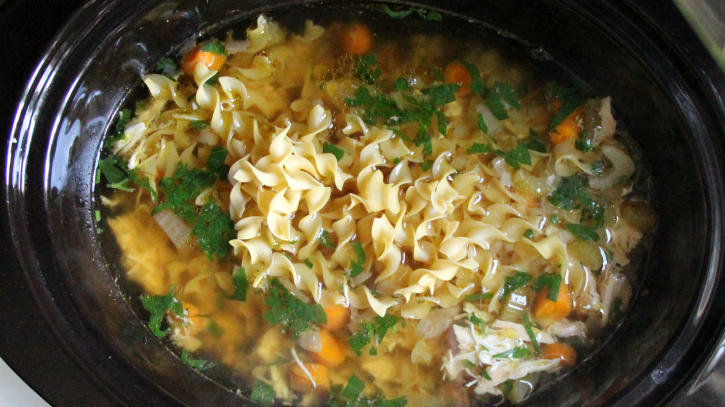

Crockpot Chicken Noodle Soup
Submitted by Lucky Li
This year marks the first year since the beginning of my college career that I'm living off-campus. To accommodate for this change and to save a little cash, I also decided to take myself off of the meal plan. But with a full class load, multiple on-campus jobs and additional work off-campus, how did I plan to cook all my meals either on time or ahead of time? The answer came in the form of an essential kitchen appliance -- the Crockpot! Here's how to make my go-to soup for these first couple months of school when illnesses are floating around in the air and catching something nasty is almost inevitable.
Ingredients
- 1 1/2 lb whole chicken
- 1 medium potato, chopped
- 1 cup baby carrots
- 1 medium yellow onion, diced
- 2 stalks celery, chopped
- 3-4 cloves garlic, minced
- 2 Tablespoons extra virgin olive oil
- 1/2 teaspoon dried or fresh thyme
- 1 bay leaf
- 7 cup water (or a combination of chicken broth and water, to taste)
- Salt and freshly ground black pepper to taste
Instructions
- In a 6 quart Crockpot, place the chicken on the bottom and top with, potatoes, carrots, onion, celery, garlic, olive oil, thyme and bay leaf.
- Next add in water (and chicken broth), cover and cook on low heat 8-10 hours.
- Switch to high heat for 3-4 hours, stirring occasionally. The chicken should be pretty easy to break up by now. Doing so will ensure even cooking throughout.
- Season with salt and pepper to taste.